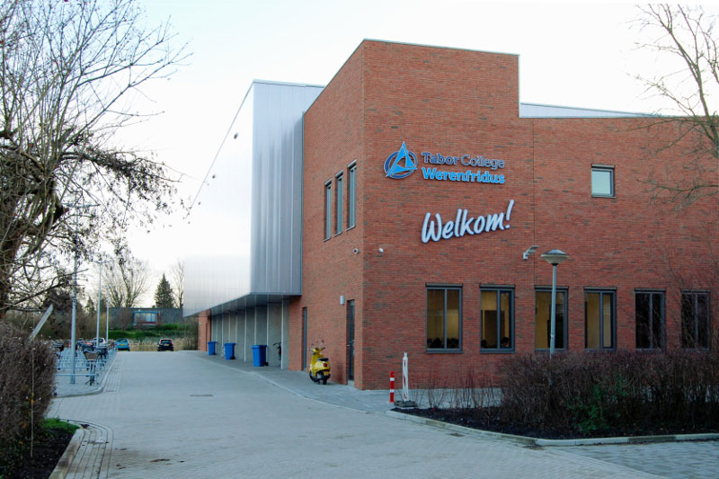

wij zijn gevraagd als leerling om een website te maken met aantrekkelijke producten die zouden verkocht kunnen worden in de kantine in 2023. in deze website zal je de producten kunnen vinden die wij hebben uitgekozen maar ook de specificaties van de producten. wij hebben een groot aanbod van producten zoals fruit, groente, en biologische producten.
